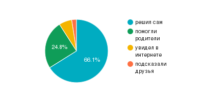
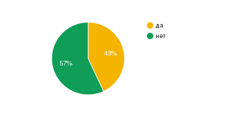
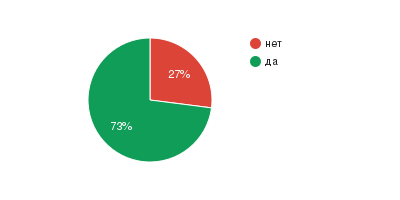

<!DOCTYPE html>
<html lang="en">
<head>
    <meta charset="UTF-8">
    <meta http-equiv="X-UA-Compatible" content="IE=edge">
    <meta name="viewport" content="width=device-width, initial-scale=1.0">
    <title>Профессиональный выбор подростков</title>
    <link rel="stylesheet" href="style.css">
    <script src="script.js"></script>
</head>
<body>
    <div class="main">
        <div class="container">
            <div class="header">
                <div class="header__title">Профессиональный выбор подростков</div>
            </div>
            <div class="nav">
                <div class="nav__title">Навигация по сайту</div>
                <div class="nav__text">
                    <ul>
                        <li><a href="#begin">Введение</a></li>
                        <li><a href="#special">Психологические особенности подростков</a></li>
                        <li><a href="#int">Разнообразие интересов - основа выбора профессионального увлечения</a></li>
                        <li><a href="#prof">Информирование о мире профессий </a></li>
                        <li><a href="#base">Самопознание - основа для профессионального выбора </a></li>
                        <li><a href="#ex">Анализ особенностей восприятия подростками ситуации собственного профессионального выбора</a></li>
                        <li><a href="#end">Заключение</a></li>
                        <li><a href="#lit">Список литературы</a></li>
                    </ul>
                </div>
            </div>    

                <div class="begin first" id="begin">
                    <div class="main__title">Введение</div>
                    <div class="main__text">
                        <p>Современные старшеклассники во многом отличаются от поколения
                            своих родителей, бабушек и дедушек. Педагоги и психологи отмечают
                            тенденцию, дающую возможность понять, что современные подростки
                            думают по-другому, и иначе, чем их родители, относятся к выбору будущей
                            профессии.
                            </p>
                        <p>Выбор профессии – это важный шаг во взрослую жизнь. Самое 
                            главное в выборе понять, чего ты хочешь от этой профессии, сможет ли эта
                            профессия ответить взаимностью.
                            </p>
                        <p>Внутренний мир человека, его индивидуальность и неповторимость во
                            многом влияют на его развитие, и, безусловно, на выбор профессии. На
                            сегодняшний день существует много профессий, и любой школьник, в том
                            числе и я, стоит перед сложным выбором, решая, с какой деятельностью
                            связать свою жизнь, где учиться и куда пойти работать. Сейчас я должен быть 
                            уверен, что выбранная профессия обеспечит мне и моим близким стабильное
                            будущее.</p>
                        <p><strong>Актуальность</strong> данной темы не вызывает сомнений, так как количество
                            профессий постоянно растет, а значит выбрать себе подходящую профессию
                            становится все сложнее. Я выбрал данную тему, потому что сам сейчас
                            являюсь учеником 9 класса и так же, как все мои сверстники столкнулся с
                            проблемой выбора профессии. Думаю, что эта работа будет полезна как моим
                            одноклассникам, так и мне самому.
                            </p>
                        <p><strong>Проблемой</strong> является то, что в настоящее время большинство
                            выпускников школ имеют слабое представление о своей будущей профессии,
                            а также о знаниях и навыках, которые им в ней пригодятся. Это приводит к 
                            тому, что люди разочаровываются в выбранной ими профессии либо всю
                            жизнь работают на нелюбимой работе, либо идут получать другую
                            специальность. В обоих случаях люди тратят несколько лет своей жизни на
                            получение образования, которое не оправдывает их ожиданий.</p>
                        <p>Найти что-то подходящее, что будет нравиться всю жизнь, бывает
                            очень трудно. Ведь от этого будет зависеть как выбор экзаменов, так и
                            поступление в колледж или ВУЗ на определенную специальность.
                            </p>
                        <p>Именно в этом периоде жизни старшеклассника процесс определения
                            профессии является одним из основных выборов, на основании которого
                            строится будущее, поэтому мы должны очень серьезно отнестись к этому.</p>
                        <p><strong>Тип проекта</strong> – исследовательский.</p>
                        <p><strong>Цель</strong> проекта: помочь другим старшеклассникам и себе с выбором 
                            профессии.
                            </p>
                        <p><strong>Задачи:</strong></p>
                        <p>• собрать и оформить материал по выбранной теме</p>
                        <p>• изучить проблему выбора профессий, узнать мнение специалистов о том, как правильно выбрать профессию</p>
                        <p>• выявить ошибки, которые допускаются при выборе профессии</p>
                        <p>• исследовать роль родителей и школы в процессе формирования cистемы ценностей современных старшеклассников, лежащей в
                            основе их самоопределения при выборе профессии через 
                            проведения «Анонимного-опроса»</p>
                        <p>• по данным опроса и проделанной работе подвести итог</p>
                    </div>
                </div>

                <div class="special second" id="special">
                    <div class="main__title">Психологические особенности подростков</div>
                    <div class="main__text">
                        <p>Подростковый возраст - это время серьезной перестройки организма.
                            Самое важное для подростка - найти свое место в жизни, осознать, кем он
                            хочет быть и как он собирается строить взрослую жизнь. Эти поиски часто
                            оборачиваются болезненными переживаниями, эмоциональной
                            неустойчивостью и потерей интереса к учебе. Проблема процесса выбора
                            профессии в 14-15 лет приобретает вселенский масштаб.</p>
                        <p>Довольно частым явлением у современных подростков является
                            отсутствие мотивации. Они не хотят изучать тот или иной предмет в 
                            школе, потому что не знают, зачем им это нужно и как это пригодится в
                            жизни.</p>
                        <p>Поскольку подростковый возраст - это время выбора профессии, с этим
                            возникают определенные сложности, а тем людям, которым удалось легко 
                            сделать выбор, чувствуют себя счастливчиками. Для них автоматически
                            решается масса проблем. Куда поступать? Какие предметы сдавать? Как 
                            лучше готовиться к сдаче экзаменов?</p>
                        <p>Многие замечают, что у этих ребят повышается уверенность в себе. Они
                            теперь знают, кто они. Будущий врач или будущий психолог.</p>
                    </div>
                    <div class="img">
                        
                        
                        
                    </div>
                </div>


                <div class="int third" id="int">
                    <div class="main__title">Разнообразие интересов основа выбора профессионального
                        направления</div>
                    <div class="main__text">
                        <p>Для правильного выбора профессии необходимо знать или хотя бы
                            представлять те требования, которые предъявляют к человеку различные
                            профессии, а также знать свои индивидуально-психологические особенности,
                            чтобы соотнести их с этими требованиями. Любая профессия предъявляет
                            требования к интересам: в одних случаях это интерес к новому, в других — к
                            практической деятельности, процессу труда или его результату.</p>
                        <p>Интерес – отношение личности к предмету как к чему-то для нее ценному,
                            привлекательному. Положительноеотношение к определенной области труда,
                            стремление к познанию и деятельности в этом направлении. Содержание и
                            характер интересов непосредственно связаны с мотивами и потребностями
                            человека.</p>
                        <p>Интересы различаются:</p>
                        <p>• по содержанию (например, литература, музыка, техника);                        </p>
                        <p>• по широте (разносторонние или узкие, направленные только на один
                            предмет или его сторону);</p>
                        <p>• по глубине (глубокие или поверхностные);</p>
                        <p>• по длительности (устойчивые и неустойчивые).</p>
                        <p>Значение интересов в жизни человека велико: они побуждают овладевать
                            знаниями, расширять кругозор, помогают преодолевать трудности,
                            препятствия.
                            </p>
                        <p><strong>Склонность</strong> – это стремление заниматься определенной деятельностью,
                            жажда этой деятельности. Это желания человека, побуждения, потребности в
                            определенных видах деятельности, стремление не только к результату, но и к
                            самому процессу того, что человек делает. Настоящая склонность обычно сочетает в себе устойчивый интерес к тем или иным явлениям
                            действительности и устойчивое стремление самому действовать в этом
                            направлении. Склонность – это влечение, интерес к какому-либо занятию.
                            </p>
                        <p>Применительно к выбору профессии выделяют следующие виды
                            склонностей:
                            </p>
                        <p>• склонность к работе с людьми;                        </p>
                        <p>• склонность к работе с техникой;</p>
                        <p>• склонность к работе с условными знаками;</p>
                        <p>• склонность к работе с растениями и животными;</p>
                        <p>• склонность к работе с художественными образами.</p>
                        <p><strong>Способности</strong> – это такие индивидуально-психологические свойства 
                            человека, от которых зависит возможность успешного осуществления 
                            определенного рода деятельности. Способности не сводятся к имеющимся у
                            человека знаниям, умениям, навыкам. Они обнаруживаются в быстроте,
                            глубине и прочности овладения способами и приемами некоторой
                            деятельности и являются внутренними психическими регуляторами,
                            обусловливающими возможность их приобретения.
                            </p>
                        <p>Выделяют следующие виды специальных способностей:</p>
                        <p>• учебные и творческие;</p>
                        <p>• математические;                        </p>
                        <p>• конструктивно-технические;                        </p>
                        <p>• музыкальные;</p>
                        <p>• литературные;                        </p>
                        <p>• художественно-изобразительные.</p>
                    </div>
                    
                </div>


                <div class="prof second" id="prof">
                    <div class="main__title">Информирование о мире профессий</div>
                    <div class="main__text">
                        <p>Отсутствие информированности о существующих профессиях — это,
                            наверное, одна из самых основных проблем, с которой сталкиваются
                            будущие выпускники. Слабое представление о том, какие профессии вообще
                            бывают (кроме самых основных и распространѐнных) и что происходит на
                            рынке труда, приводят школьников к подвешенному состоянию, когда нужно
                            срочно определяться со школьными экзаменами (ОГЭ И ЕГЭ), для выбора
                            которых, в свою очередь, нужно знать, куда пойти учиться и какие экзамены
                            сдавать. Получается замкнутый круг, в результате которого множество
                            школьников просто выбирают для сдачи экзамены более легкие предметы, а
                            потом ломают голову, куда бы с таким набором поступить учиться. Как итог, 
                            страна имеет большое количество молодых специалистов, которые не любят 
                            свою профессию и работать по специальности не хотят.</p>
                        <p>Мир профессий не стоит на месте и непрерывно меняется. Одни
                            специальности уходят в прошлое, другие только появляются. С развитием
                            науки и появлением новых методов постоянному изменению подвергаются
                            практически все имеющиеся на современном рынке труда профессии.
                            </p>
                        <p>Поэтому в процессе определения необходимо хорошо знать, что
                            представляет собой та или иная профессия в настоящее время. Можно
                            самостоятельно найти в интернете требования к специалистам, описание
                            процесса работы или сходить на ярмарки вакансий и дни открытых дверей на
                            интересующих предприятиях. Таким образом, возможные ошибки выбора
                            профессии из-за незнания текущего положения дел будут сведены к
                            минимуму</p>
                    </div>
                    <div class="img">
                        
                        
                        
                        
                    </div>
                </div>


                <div class="base first" id="base">
                    <div class="main__title">Самопознание основа для профессионального выбора</div>
                    <div class="main__text">
                        <p>На определѐнном этапе жизни каждому человеку приходится принимать
                            одно из наиболее важных решений в своей жизни: определиться со сферой
                            образования и выбрать профессию. Как показывает практика, многие люди
                            испытывают затруднения в выборе карьерного пути по самым
                            разнообразным причинам.</p>
                        <p><strong>Профессиональная ориентация</strong> – это комплекс действий для
                            выявления у человека склонностей и талантов к определенным видам
                            профессиональной деятельности, а также система действий, направленных на
                            помощь в выборе карьерного пути людям всех возрастов.
                            Важность профориентации</p>
                        <p>В современном мире существует огромное количество профессий и с
                            развитием общества постоянно появляются новые. Найти подходящую для
                            себя профессию – нелегкая задача, требующая умения разобраться в себе: 
                            знать свои слабые и сильные стороны, адекватно оценивать физические и 
                            умственные возможности, быть готовым постоянно учиться и усваивать
                            большие объемы знаний.</p>
                        <p>Наиболее успешен в своей карьере тот человек, который с радостью ходит
                            на работу как на праздник, а это возможно только при грамотно проведѐнной
                            профориентационной работе. В лучшем случае такая работа продолжается на
                            протяжении всей жизни человека. В разном возрасте профориентация решает
                            различающиеся проблемы: в школе это вопрос выбора профессии, а в
                            организации может быть адаптацией к процессу труда.</p>
                        <p>В России значительно ослабли позиции значимости трудового воспитания
                            подрастающего поколения. Свою роль в этом процессе сыграли как средства
                            массовой информации, формирующие преимущественно потребительское
                            отношение к жизни, так и значительное разделение престижности профессий, пусть и не всегда совпадающее с действительностью. Молодежь мечтает о
                            возможности сделать легкую и быструю карьеру в экономической или
                            юридической сферах, в то время как наука, работа руками и сельское
                            хозяйство часто воспринимаются как работа для неудачников. Однако
                            грамотный специалист на крупном предприятии может получать значительно
                            большую зарплату, чем очередной экономист в офисе.</p>
                        <p>Заметно увеличилось и количество людей, работающих не по полученной
                            специальности, особенно сильно эта тенденция прослеживается среди
                            выпускников высших учебных заведений. Таким образом, рынок труда за
                            счет государственных средств, ушедших на образование студента,
                            насыщается бесполезными специалистами.</p>
                        <p>Эти и другие проблемы может решить грамотно и вовремя проводимая
                            профориентация, начиная с детского сада и на протяжении всего времени
                            обучения в школе и средне-специальных или высших учебных заведениях.</p>
                        <p><strong>Функции профориентации:</strong></p>
                        <p>Профориентационная работа включает в себя диагностическую,
                            организационную, информационную и профилактическую функции.</p>
                        <p><strong>Диагностическая функция:</strong></p>
                        <p>• Выявляет способности и склонности человека к тем или иным видам
                            деятельности
                            </p>
                        <p>• Находит положительные качества личности                    </p>
                        <p>• Изучает познавательные интересы детей и взрослых                    </p>
                        <p>• Исследует влияние родителей и близких людей на выбор ребѐнком
                            профессии</p>
                        <p>• Выявляет стремления и намерения учащегося при выборе
                            профессии и дальнейшего обучения</p>
                        <p>• Определяет адекватность оценки человеком своих достижений и
                            успехов и их взаимосвязь с различными видами деятельности</p>
                        <p><strong>Организационная функция:</strong></p>
                        <p>• Организует культурно - досуговую исоциально - значимую
                            деятельность</p>
                        <p>• Организует передачу опыта и впечатлений от работающих
                            специалистов</p>
                        <p>• Знакомит с многогранным и разнообразным миром профессий                    </p>
                        <p>• Помогает в самореализации и развитии заложенного природой
                            потенциала</p>
                        <p>• Проводит разнообразные мероприятия по профориентации
                            (знакомство с профессиями, экскурсии на предприятия, конкурсы и
                            так далее)</p>
                        <p><strong>Информационная функция:</strong></p>
                        <p>• Проводит информационные мероприятия и кампании по вопросам
                            получения образования, имеющихся специальностях в учебных
                            учреждениях, правилам приѐма и проходных баллов ОГЭ и ЕГЭ.</p>
                        <p>• Информирует о текущей ситуации на рынке труда и планируемых
                            переменах
                            </p>
                        <p><strong>Профилактическая функция:</strong></p>
                        <p>• Уменьшает количество ошибок при выборе профессии                    </p>
                        <p>• Предупреждает неправильное восприятие имеющихся на рынке
                            труда профессий</p>
                    </div>
                </div>

                <div class="ex second" id="ex">
                    <div class="main__title">Анализ результатов опроса подростков</div>
                    <div class="main__text">
                        <p>В ананимном - опросе приняли участие ученики 9 классов. При выборе 
                            своей профессии 70% ребят решили сами, кем им стать в будущем. А вот 30-
                            ти % понадобилась помощь Интернета и родителей (рис. 4). Родители –
                            люди, которые знают своего ребенка с пеленок, которые видели, как он 
                            развивался, что ему нравилось с самого детства. На протяжении всего 
                            времени они присутствовали рядом и вместе решали какие-то проблемы. Они 
                            лучше всех могут охарактеризовать своих дочь или сына и сказать, в какой 
                            сфере их ребенок мог бы добиться успеха. А на просторах Интернета можно
                            получить много различной информации: это и рынок труда и мир 
                            профессий, и требования к каждой из них.</p>
                        <p>Но вот помогла ли школа при выборе профессии ученикам? 57% 
                            учеников считают, что нет. Но 43% все-таки считают, что помогла.
                            (рис. 2) Я считаю, что школа оказывает влияние при определении 
                            профессионального выбора. Это весь учебный материал, который в будущем 
                            нам понадобится на работе. 90% того, что мы изучаем в школе, может и не 
                            пригодиться нам в дальнейшей жизни, но нам очень понадобятся те 
                            нейронные связи, которые при этом возникли.</p>
                        <p>73% учеников ответили, что их личные интересы совпадают с их 
                            будущей профессией. (рис. 3)</p>
                    </div>
                    <div class="slide">
                        
                        
                        
                    </div>
                </div>

                <div class="end third" id="end">
                    <div class="main__title">Заключение</div>
                    <div class="main__text">
                        <p>При создании данного проекта был подробно изучен материал по теме: 
                            психологические особенности старшеклассников, интересы и склонности,
                            информирование о мире профессий, организация профориентации.</p>
                        <p>Подводя итоги своей работы, я надеюсь, что ученики поняли основные
                            ошибки при выборе профессии, что касается лично меня, для себя я сделал
                            вывод, какие профессии мне ближе. В дальнейшем я хочу прийти к
                            окончательному результату. Ведь не выходя из дома, можно определиться,
                            кем ты хочешь стать</p>
                        <p>Кем быть, проблема выбора профессии – важный шаг в жизни каждого
                            человека. Для того, чтобы избежать необратимых последствий принятого
                            решения, старшеклассникам необходимо внимательно прислушиваться к
                            собственным склонностям, развивать данные от природы способности, в
                            школе организовывать работу по профориентации, а родителям нужно
                            принимать и уважать выбор своих детей.</p>
                    </div>
                </div>

                <div class="lit second" id="lit">
                    <div class="main__title">Список литературы</div>
                    <div class="main__text">
                        <p>• Профессии. Когда я вырасту, то стану…: энциклопедия профессий в
                            картинках / С. Санжа; худож. М. Стари; [пер. А. Наумовой]. – М.:
                            Издательство «Мелик-Пашаев», 2017. – 72 с.: цв.ил.</p>
                        <p>• Психология профессионального самоопределения : учеб. Пособие для
                            студ. высш. учеб. Заведений / Е.А. Климов. – 4-е изд., стер. – М.:
                            Издательский центр «Академия», 2010. – 304 с.</p>
                        <p>• [Электронный ресурс]: Введение -
                            <a href="https://medaboutme.ru/articles/vybor_professii_dlya_podrostkov/">https://medaboutme.ru/articles/vybor_professii_dlya_podrostkov/</a></p>
                        <p>• [Электронный ресурс]: Информирование о мире профессий -
                            <a href="https://careertest.ru/articles/common-mistakes/">https://careertest.ru/articles/common-mistakes/</a></p>
                        <p>• [Электронный ресурс]: Психологические особенности
                            подростков - <a href="https://medaboutme.ru/">https://medaboutme.ru/</a></p>
                        <p>• [Электронный ресурс]: Разнообразие интересов основа выбора
                            профессионального направления -
                            <a href="https://www.kem.by/proforientir/interesy-sposibnosti-v-vybore-prof/">https://www.kem.by/proforientir/interesy-sposibnosti-v-vybore-prof/</a></p>
                        <p>• [Электронный ресурс]: Самопознание основа для
                            профессионального выбора - <a href="https://proforientatsia.ru/careerguidance/chto-takoe-proforientatsiy">https://proforientatsia.ru/careerguidance/chto-takoe-proforientatsiy</a></p>
                    </div>
                </div>

                <div class="footer">
                    <div class="footer__title">Made by Dmitriy Egorov. 2023</div>
                </div>
        </div>
    </div>
</body>
</html>